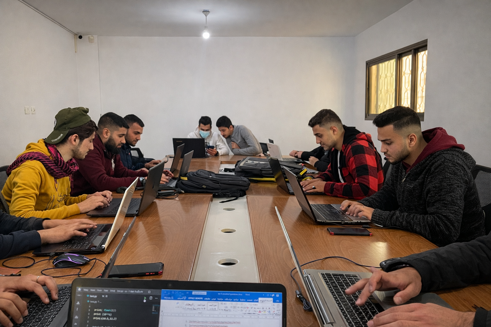
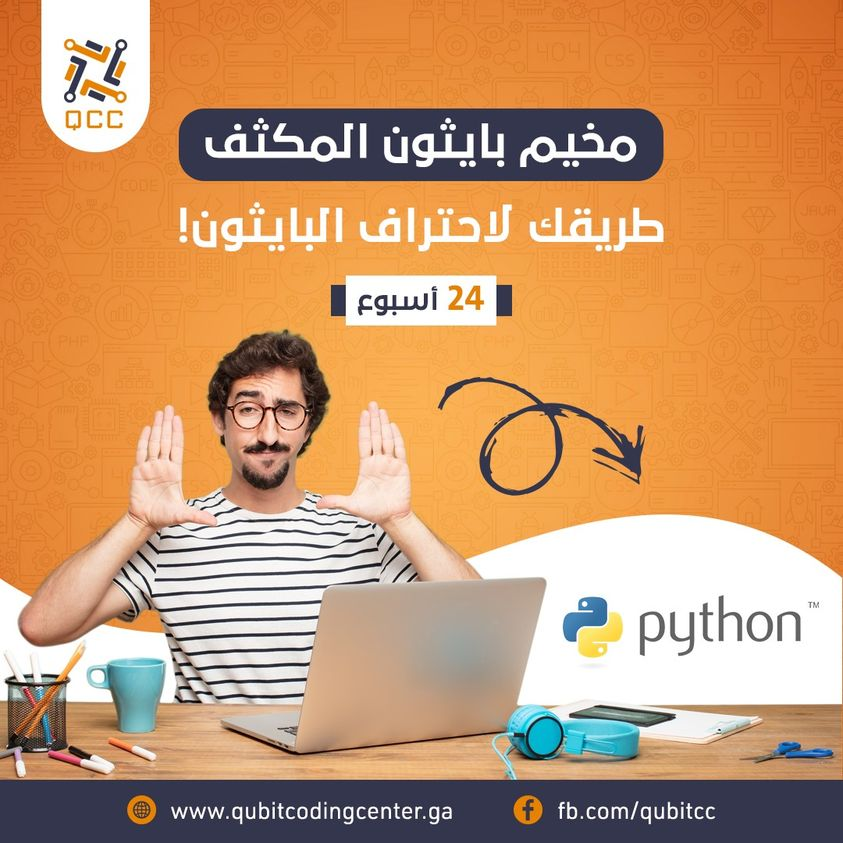
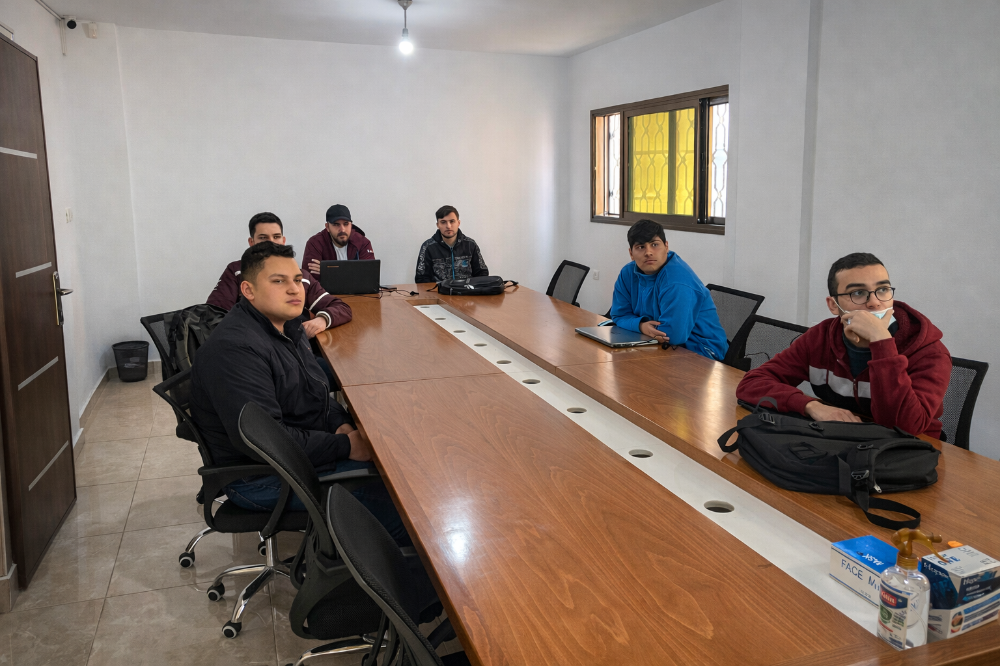
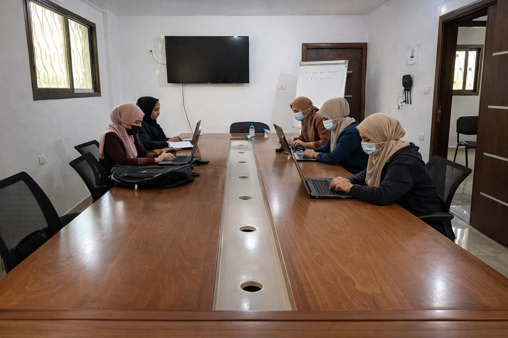

EN
AR
ENTERING
← Back
Qubit Coding Center

A learning room built for thinking, not memorization.
Progress through tests and evaluated projects — not attendance.

Progress through tests and evaluated projects — not attendance.

Real challenges. Iteration. Failure. Then clarity.

Final phase: independently design, build, and present a complete solution.
‹
›
Why Qubit Was Created
A Structured Learning Path
Learning by Building
Measured Impact
Project Status
From Education to Systems